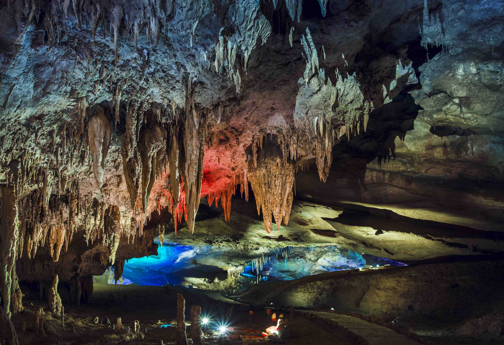
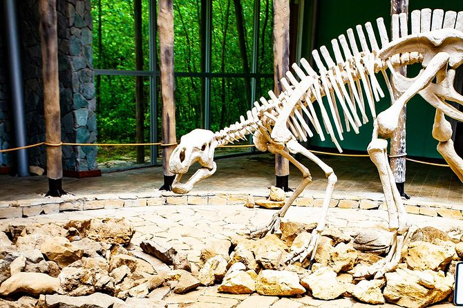
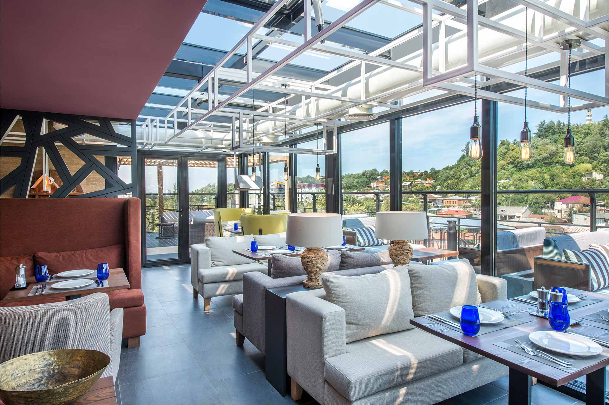
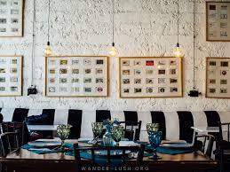

იმერეთის შესახებ
იმერეთი დასავლეთ საქართველოს ისტორიული რეგიონია, რომელიც ცნობილია ბუნებრივი სიმდიდრებით, მღვიმეებით, ჩანჩქერებითა და უძველესი საკულტო ნაგებობებით. ქუთაისი — რეგიონული ცენტრი — მნიშვნელოვან კულტურულ და ისტორიულ მნიშვნელობას ატარებს. ბაგრატის ტაძარი, გელათის მონასტერი, პრომეთეს მღვიმე და სათაფლიის ნაკრძალი იმერეთს ერთ-ერთ უმნიშვნელოვანეს ტურისტულ მიმართულებად აქცევს.
ფოტო გალერეა


ადგილები სანახავად
ბაგრატის ტაძარი
XI საუკუნის ტაძარი, რომელიც ქუთაისის სიმბოლოდ ითვლება და საქართველოს კულტურული მემკვიდრეობის ნაწილია.

პრომეთეს მღვიმე
უნიკალური სტალაგმიტებით და სტალაქტიტებით ცნობილი მღვიმე, ერთ-ერთი ყველაზე პოპულარული ღირსშესანიშნაობა საქართველოში.
სათაფლია
ნაკრძალი, ცნობილი დინოზავრების ნაკვალევით და თვალწარმტაცი მინის პლატფორმით.
იმერეთი
Hotel & Spa Bagrati
მდებარეობს ქუთაისში. Hotel & Spa Bagrati სტუმრებს სთავაზობს კომფორტულ ნომრებს, სპა ცენტრს და ადგილზე არსებულ რესტორანს — იდეალურია დასვენებისთვის და იმერეთის ისტორიული ღირსშესანიშნაობების მოსანახულებლად.


White House – რესტორანი
White House არის პოპულარული რესტორანი ქუთაისში, რომელიც გთავაზობთ ტრადიციულ იმერულ კერძებს, თბილ ატმოსფეროს და მეგობრულ მომსახურებას როგორც ადგილობრივებისთვის, ასევე ტურისტებისთვის.
 